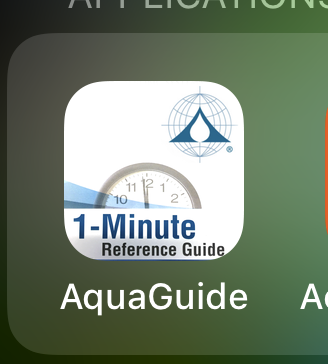
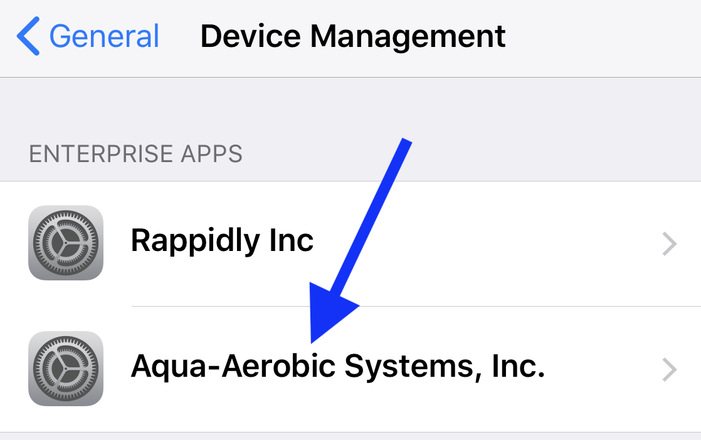
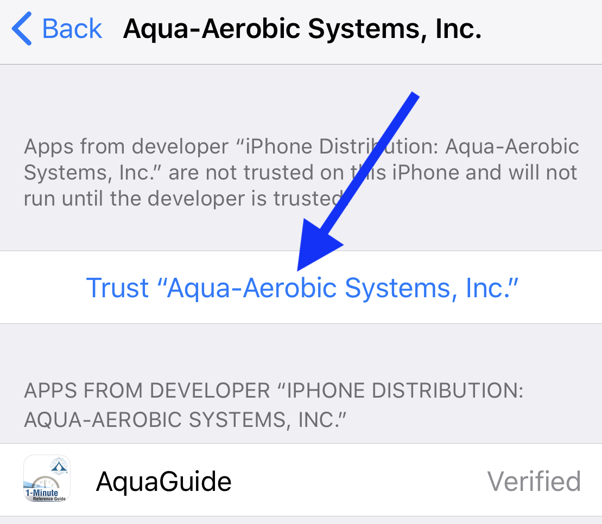
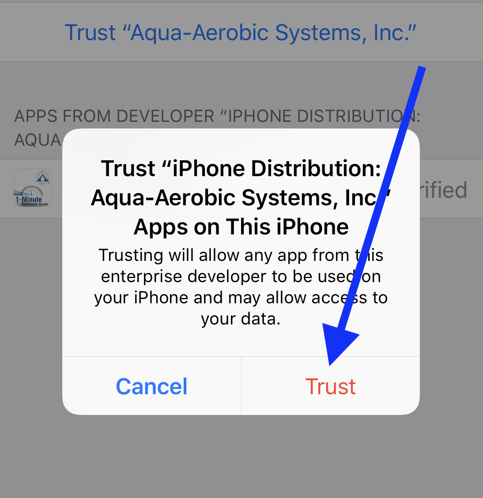
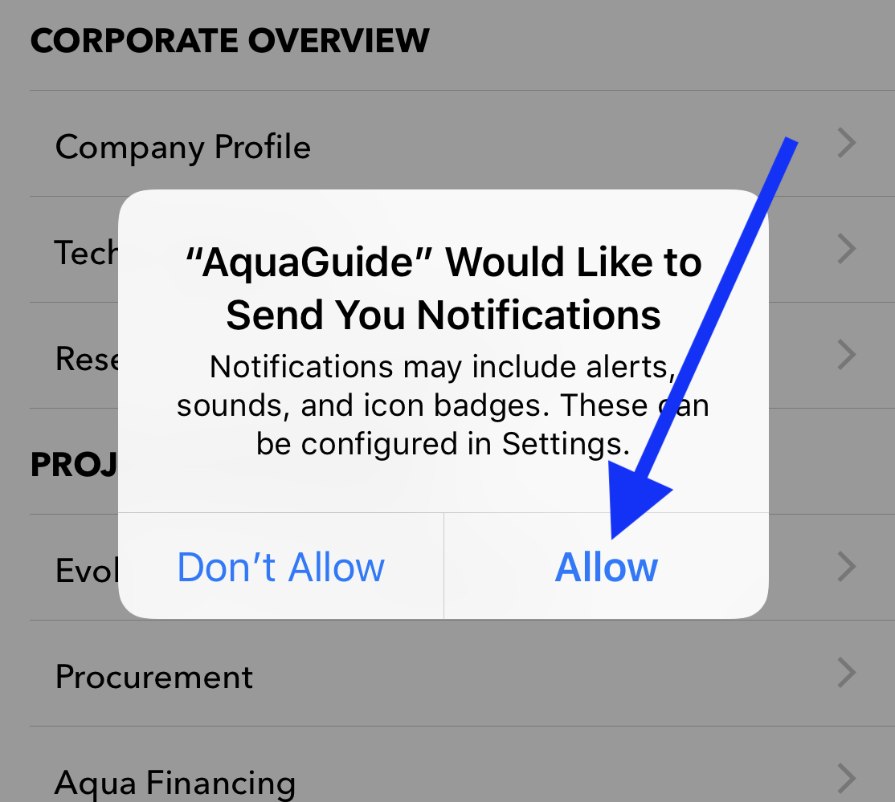

TRUST APP
- When you first open the app you see a notification that the app isn't trusted on your device. You can dismiss this message.

- Tap Settings > General > VPN & Device Management > Aqua-Aerobic Systems, Inc.

- Tap Trust "Aqua-Aerobic Systems, Inc"

- Tap Trust prompt to verify that you trust the app
(If prompted: "Allow Apps from Aqua-Aerobic Systems, Inc."?, tap "Allow & Restart")

Apple now requires your iPhone
to reverify periodically to maintain trust.
- Tap Yes, If prompted to install profile.
- You are now ready to use the app
- Open app and Tap Allow Notifications

- Enjoy!